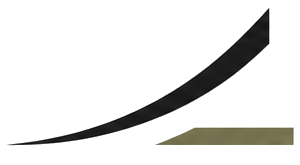
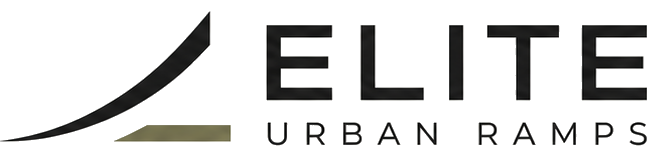
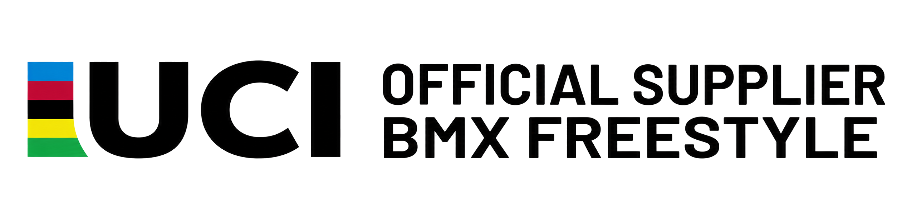

Projektowanie i realizacja infrastruktury sportów miejskich
Elite Urban Ramps łączy ponad 30 lat międzynarodowego doświadczenia projektowego i technologicznego G.RAMPS z lokalnym prowadzeniem inwestycji przez Fundację Sportów Miejskich.
Projektujemy i realizujemy skateparki, parki BMX Freestyle, obiekty parkour oraz specjalistyczną infrastrukturę zawodniczą i treningową. Każdy projekt powstaje w oparciu o analizę lokalizacji, potrzeby przyszłych użytkowników, zakładany budżet oraz wymagania techniczne i formalne inwestycji.
Wspieramy samorządy i inwestorów na każdym etapie — od określenia funkcji i skali obiektu, przez koncepcję, dokumentację techniczną i przygotowanie postępowania, aż po produkcję, montaż, nadzór oraz odbiór gotowej infrastruktury.
Dzięki połączeniu kompetencji obu partnerów inwestor otrzymuje jeden zespół odpowiedzialny za cały proces: międzynarodowe know-how projektowe, lokalną koordynację, wykonawstwo i wsparcie po zakończeniu realizacji.


Doświadczenie potwierdzone realizacjami
Obiekty projektowane i realizowane dla najważniejszych wydarzeń sportów miejskich oraz inwestorów publicznych na świecie.
{{ proj.desc }}

Międzynarodowe doświadczenie. Kompleksowe prowadzenie inwestycji.
Jeden zespół odpowiedzialny za cały proces — od założeń inwestycji do gotowego obiektu.
Wsparcie dla samorządów i inwestorów publicznych
Wiele problemów pojawia się jeszcze przed rozpoczęciem projektowania — na etapie wyboru lokalizacji, określenia budżetu i przygotowania dokumentacji przetargowej.
Elite Urban Ramps pomaga uporządkować założenia inwestycji i przygotować zakres, który odpowiada rzeczywistym potrzebom użytkowników.
Pomagamy uniknąć kosztownych błędów projektowych jeszcze przed ogłoszeniem przetargu.
Umów konsultację dotyczącą inwestycjiProjektujemy obiekty o różnej skali i funkcji
{{ pt.desc }}
Od pierwszej analizy do gotowego obiektu
Układ funkcjonalny, geometria i rozwiązania konstrukcyjne.
Materiały, kolorystyka i forma obiektu przed rozpoczęciem realizacji.
Projekt przełożony na działającą infrastrukturę sportową.
Projekt nie kończy się na efektownej wizualizacji
Każde rozwiązanie projektowe analizujemy pod kątem funkcjonalności, bezpieczeństwa, wykonalności oraz przyszłych kosztów użytkowania obiektu.
Linie przejazdu, poziom sportowy, grupy użytkowników i sposób korzystania z obiektu.
Geometria, strefy bezpieczeństwa, widoczność, normy i przewidywalność użytkowania.
Konstrukcja, materiały, technologia produkcji, transport i sposób montażu.
Rozwiązania dopasowane do budżetu, trwałość materiałów, serwis i koszty eksploatacji.
„Dobry projekt to nie ten, który dobrze wygląda na wizualizacji, ale ten, który można sprawnie zbudować, bezpiecznie odebrać i dobrze użytkować przez lata.”
{{ step.desc }}
Porozmawiajmy o planowanej inwestycji
Na podstawie lokalizacji, dostępnej powierzchni i planowanej funkcji ocenimy możliwy zakres obiektu i zaproponujemy kolejne kroki.
Prześlij lokalizację i założenia inwestycjiAleja Wojska Polskiego 9
01-524 Warszawa
NIP 5252945292
REGON 524555525